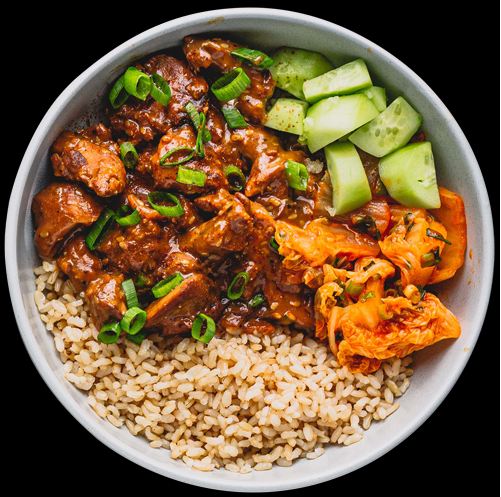

Bulgogi Chicken
Home

This bulgogi chicken is a quick-and-easy, but very tasty, meal. You can substitute the chicken with beef or pork for variety. My wife and I absolutely love this recipe, and it only takes 30 minutes with very few dirty dishes! Serve over rice.
Preperation
- Prep Time: 15 mins
- Cook Time: 15 mins
- Total Time: 30 mins
- Servings: 4
Ingredients
- ¼ cup chopped onion
- 5 tablespoons soy sauce
- 2 ½ tablespoons brown sugar
- 2 tablespoons minced garlic
- 2 tablespoons sesame oil
- 1 tablespoon sesame seeds
- ½ teaspoon cayenne
- salt and ground black pepper to taste
- 1 pound skinless, boneless chicken breasts, cut into thin strips
Directions
- Whisk onion, soy sauce, brown sugar, garlic, sesame oil, sesame seeds, cayenne pepper, salt, and black pepper together in a bowl until marinade is smooth.
- Cook and stir chicken and marinade together in a large skillet over medium-high heat until chicken is cooked through, about 15 minutes
Chef's Note
You can substitute peanut oil for the sesame oil if desired.
Add vegetables if you wish; I normally use carrot straws and sliced mushrooms. For a little more bite, I use a peppercorn medley grinder instead of black pepper.
Nutritional Facts
- Calories 269
- Fat 12 g
- Carbs 13 g
- Protein 38 g
Home